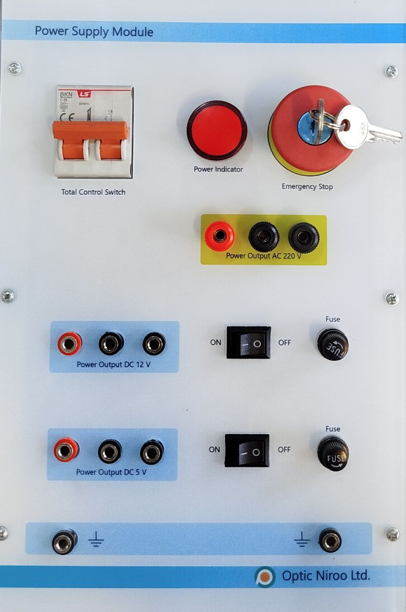

| نام تابلو: تابلو 06: منبع تغذیه |
سال ساخت: 2025 |
| دستهبندی: تابلو |
نام شرکت سازنده: اپتیکنیرو - Optic Niroo |
| کشور سازنده: ایران |
تابلو 06 «منبع تغذیه Power Supply» دربردارنده موارد زیر است:
- کانکتور مادگی تغذیه تابلو از برق شهری (کانکتور مادگی پاور رایانه) بههمراه کلید قطع و وصل
- 1 عدد فیوز مینیاتوری دو کنتاکته برای قطع و وصل همزمان فاز و نول ورودی از برق شهر بههمراه چراغ سیگنال
- 1 عدد کلید قارچی بههمراه کلید برای قطع کردن تغذیه تابلو در مواقع اضطراری
- خروجی مستقیم 220 V AC
- 1 عدد منبع تغذیه 5 V DC بههمراه کانکتورهای مادگی خروجی، فیوز و کلید مستقل در خروجی
- 1 عدد منبع تغذیه 12 V DC بههمراه کانکتورهای مادگی خروجی، فیوز و کلید مستقل در خروجی
آزمایشهایی که این تابلو در آنها به کار رفته است
- -